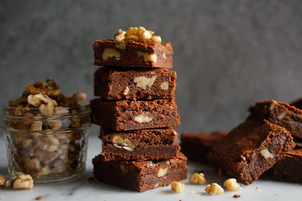

Brownies

Description
I'm literally going to straight up rip this
recipe from the nytimes eats article
This recipe is an accidental creation by Nick Malgieri, who (in a rare human moment for a pastry chef) once forgot to double the flour when baking his own fudge brownie recipe. He also adds a measure of brown sugar to the basic formula. The experts are divided as to whether the brown sugar actually contributes flavor or simply makes the brownie moister (molasses, which makes brown sugar brown, is powerfully hydrophilic). It’s my belief that the slightly bitter taste of molasses acts as an invisible enhancer to the chocolate.
The result is as complex and sophisticated as any terrine or truffle I have ever produced. —Julia Moskin
Ingredients
- 2 sticks (16 tablespoons) butter, more for pan and parchment paper
- 8 ounces bittersweet chocolate
- 1 cup dark brown sugar, such as muscovado
- 1 cup granulated sugar
- 4 eggs
- ½ teaspoon salt
- 2 teaspoons vanilla extract
- 1 cup flour
- ½ cup chopped walnuts or 3/4 cup whole walnuts, optional
Steps
-
Butter a 13-by-9-inch baking pan and line with buttered parchment paper. Preheat oven to 350 degrees. In top of a double boiler set over barely simmering water, or on low power in a microwave, melt butter, chocolate and sugars together. Cool slightly. In a large bowl or mixer, whisk eggs. Whisk in salt and vanilla.
-
Whisk in chocolate mixture. Fold in flour just until combined. If using chopped walnuts, stir them in. Pour batter into prepared pan. If using whole walnuts, arrange on top of batter. Bake for 35 to 40 minutes or until shiny and beginning to crack on top. Cool in pan on rack.